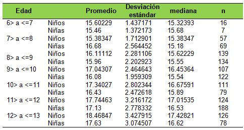
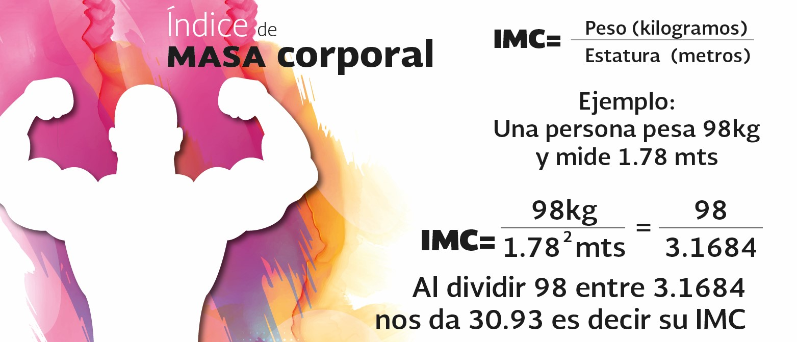
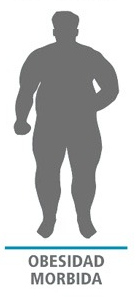
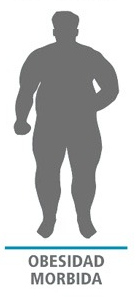

Calculadora de IMC
Tu IMC es:
Estado:
El Índice de Masa Corporal (IMC) es una medida ampliamente utilizada en el campo de la salud y la medicina para evaluar si una persona tiene un peso saludable en relación con su altura. Esta herramienta es fundamental para determinar si una persona se encuentra en un rango de peso que se considera adecuado y saludable para su estatura.
Esto se interpreta en una escala que incluye categorías como bajo peso, peso normal, sobrepeso y obesidad. Estas categorías ayudan a los profesionales de la salud a evaluar rápidamente el estado de peso de un individuo y a identificar posibles riesgos para la salud.
Es esencial tener en cuenta que el IMC es una herramienta de evaluación general y no tiene en cuenta otros factores importantes, como la distribución de la grasa corporal o la masa muscular. Por lo tanto, siempre se debe considerar en conjunto con otros indicadores de salud y la evaluación de un profesional de la salud para obtener una imagen completa de la salud y el peso corporal de una persona.
El Índice de Masa Corporal (IMC) es una medida de gran importancia en el campo de la salud y la medicina debido a su capacidad para evaluar el peso de una persona en relación con su altura. A continuación, se detallan algunas de las razones por las cuales el IMC es una herramienta fundamental:
EVALUACION DEL PESO CORPORAL:
El IMC proporciona una evaluación rápida y sencilla del peso corporal de una persona. Al comparar el peso y la altura en un solo número, ayuda a los profesionales de la salud a determinar si una persona tiene un peso saludable o si se encuentra en un rango de peso que puede ser perjudicial para su salud.
RIESGO DE ENFERMEDADES RELACIONADAS CON EL PESO:
El IMC se utiliza para estimar el riesgo de desarrollar enfermedades relacionadas con el peso, como la diabetes tipo 2, enfermedades cardiovasculares, hipertensión, apnea del sueño y ciertos tipos de cáncer. Las personas con IMC en el rango de obesidad tienen un mayor riesgo de estas condiciones.
SEGUIMIENTO DE LA SALUD
El IMC es una herramienta valiosa para el seguimiento de la salud a lo largo del tiempo. Permite a las personas y a los profesionales de la salud monitorear cambios en el peso y la salud, lo que puede llevar a intervenciones tempranas para prevenir problemas de salud a largo plazo.
DETECCION DE DESNUTRICION
El IMC no solo se aplica a la obesidad, sino que también es útil para detectar la desnutrición. Las personas con un IMC demasiado bajo pueden estar en riesgo de deficiencias nutricionales y otros problemas de salud.
Los valores del IMC para adultos se clasifican de la siguiente manera:
Los valores del IMC para niños y adolescentes se comparan con percentiles basados en la edad y el sexo. Para calcular estos valores, se utilizan tablas de crecimiento específicas.
Tu IMC es:
Estado:
El Índice de Masa Corporal (IMC) se calcula utilizando la siguiente fórmula:
IMC = Peso (kg) / (Altura (m) * Altura (m))
 
